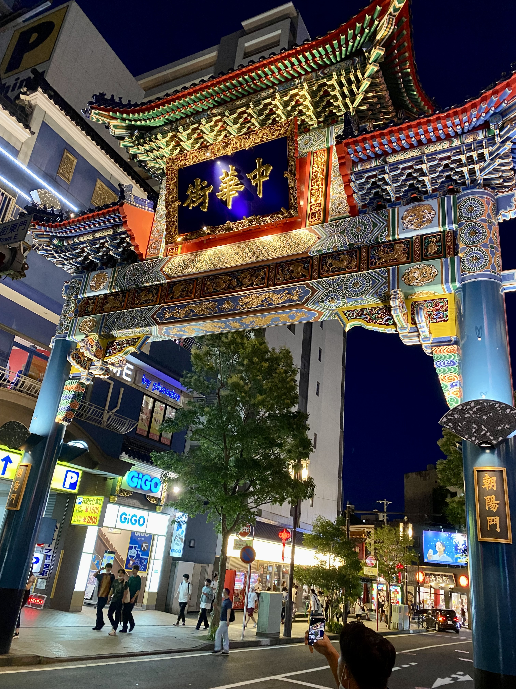
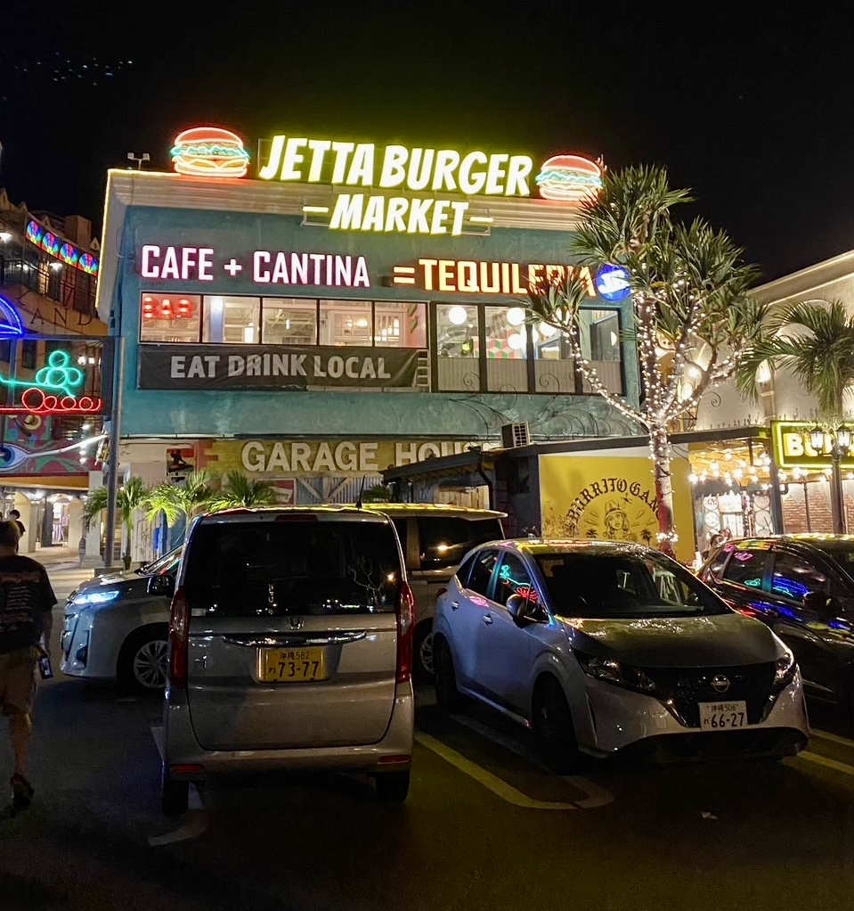
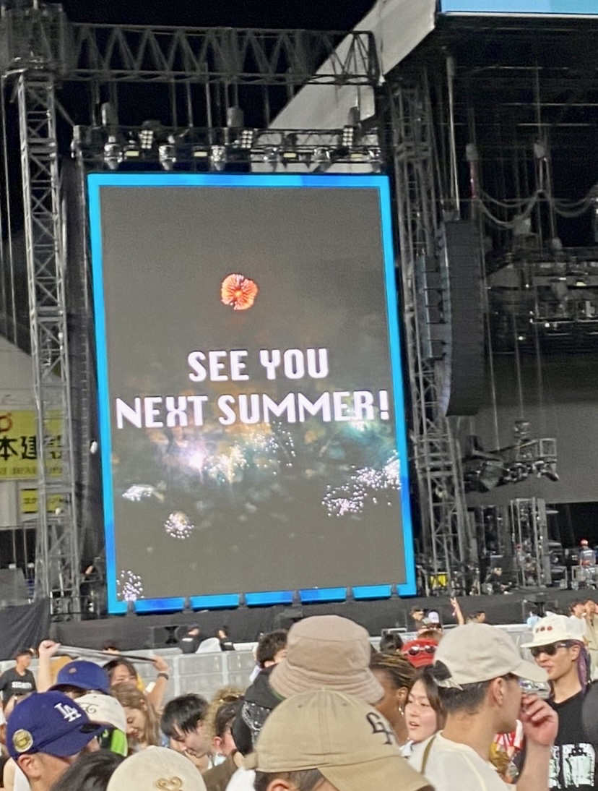

街にある看板

この写真は僕が高校生の頃７月にオープンキャンパスで横浜に行った際に撮った写真です。
人生初めての横浜中華街でとても思い出に残っています。
この中華街の門は何か所かありここは山下公園に近い場所の門です。
文字が左読みのことから時代背景や歴史を感じることもできます。

この写真は大学の友達が今年の大学の夏休みに沖縄に旅行に行ったときの写真です。
JETTA BURGUR MARKETというハンバーガー屋さんだそうです。
アメリカにありそうな見た目をしており看板などもあまりに日本で見かけない様式です。

この写真は友達が今年の８月にライブイベントを見に行った際の写真です。
Summer Sonicという大規模なライブイベントでKendrick Lamarというラッパーを目当てに行ったそうです。
この写真はライブの終わりの時に撮られた写真でこのイベントの名前にかけたSUMMERを使っていたり後ろに花火の映されていたりなど看板の工夫が見られます。